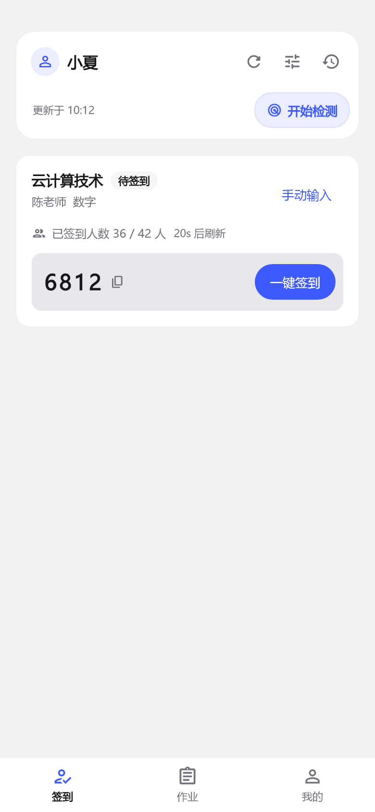
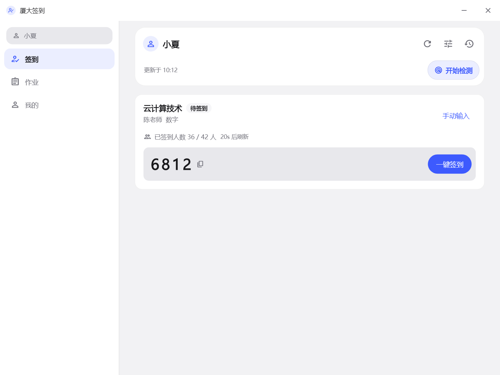
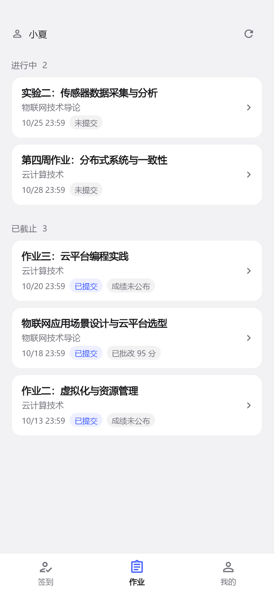

XMU-ROLLCALL / ANDROID + WINDOWS
上课看签到，
下课看作业。
厦大签到（xmu-rollcall）是面向厦门大学畅课（TronClass）的开源客户端。把课堂签到、作业和课表，放进一个顺手的小工具。
支持 Android 与 Windows · 非学校官方应用

01 / 课堂之间
电脑打开，也是熟悉的课堂。
数字、雷达和二维码签到各有入口。Windows 支持托盘驻留、系统通知和桌面二维码识别，学习时少切一次手机。


03 / 使用之前
保持简单，也把边界说清楚。
- 你来决定何时提交
- 自动签到默认关闭。主动开启后仍受等待规则和课程位置条件限制；检测与提交分开。
- 账号在设备上保存
- 账号凭据使用系统安全存储，各身份会话独立。客户端需要连接学校认证与畅课服务完成登录和数据访问。
- 后台提醒需要系统配合
- Android 需允许通知和后台运行；Windows 需保持应用运行，睡眠或退出后不继续检测。
开始使用
下一堂课，轻一点。
从 GitHub Release 获取安装包，先读适合你设备的安装步骤。
查看安装指南 ↗